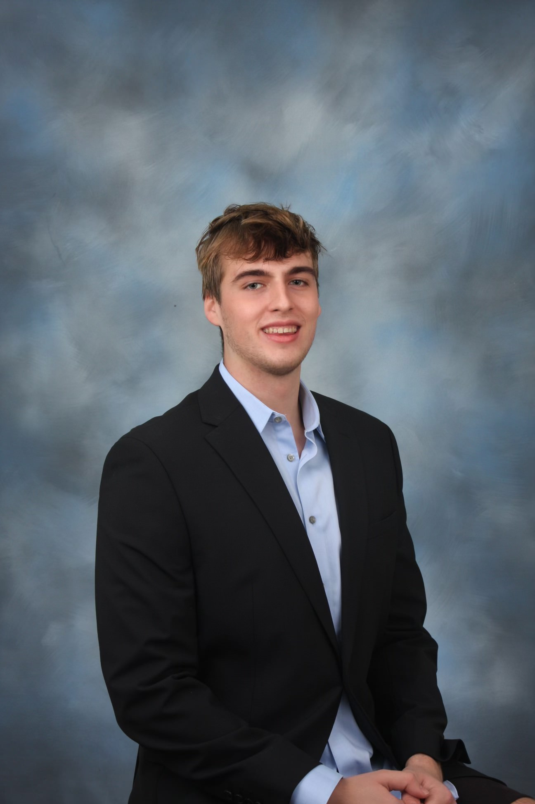

Multimedia Journalist
I drafted articles covering local news, environmental information, and profiles. To produce stories, I conducted interviews with sources to gather information and quotes for stories and edited/revised content to meet deadlines. I published online and in print articles, filmed and edited man-on-the-street videos posted on social media platforms, helped the broadcast team livestream the Bergen County Football All-Star Game, and sat in on weekly editorial meetings to pitch and discuss story ideas.
I report and anchor for Terrapin Sports Central, a student sports news service on campus. For reporting, I attend numerous Maryland sports games where I film, interview, and edit to create gamers posted on social media. On camera, I anchor “live” shows where I write my script, recap the prior week in Maryland sports, speak to guests, and play games behind the desk.
I executed the delivery and collection of bicycles across properties on Hilton Head Island. I also participated in and completed a comprehensive 10-week Entrepreneurship program. Lastly, I leveraged real financial reports to gain practical knowledge about business valuation.
I served as a counselor while participating with kids in daily sports activities. I exercised final authority for assigned groups and created a safe environment for all children.